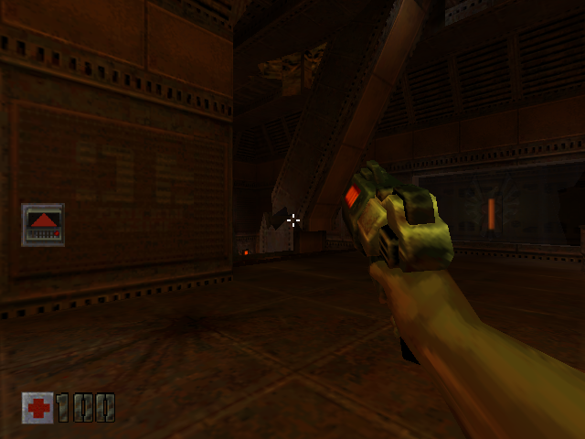

We started Quake II from the RE4 Zeebo compatibility work. The phone then took a compressed-texture path our earlier desktop renderer had sidestepped.Q201Q203
Level one.
The phone’s EGL context and readbacks were working before a 32×64 compressed texture at mip level 1 hit the guard. The existing decoder accepted its bytes; an inherited level-not-zero check rejected them first.Q203Q204
Our earlier desktop fixture advertised no relevant extension, so the game used its uncompressed fallback. We revised the checks to reproduce the actual Android adapter failure, then sent compressed uploads through that production adapter into Mesa. Now we were checking the route that had failed on the phone.Q204

The original Quake II world and weapon in a retained 640×480 desktop original-runtime frame.
Open the image for the full original view.
Q290The long load.
Later loader acceleration was bound to the measured original LZMA wrapper and archive identity. All 3,330 decoded entries were compared with actual original ARM output, including lengths and file positions. Disposable caches could help without becoming required game data.Q207Q208
The retained single-run desktop first-map comparison fell from 33.820 seconds to 5.682 cold and 4.851 warm. Those loading times include decompression, setup, texture uploads and verification swaps. The strengthened route waited for an active original map instead of assuming a fixed number of frames meant loading was done.Q208Q209
We kept the original control, save and reload checks alongside the loader work. The missing texture contract and the long loading wait were different problems. Both stood between opening the game and settling into its map.Q205Q206Q208
About these records
The phone texture fault, production-adapter reproduction and desktop map timings retain separate scopes. The retained image is historical desktop original-runtime output. Exact decoder comparisons establish their stated bytes/contracts, not whole-game equivalence or phone speed. The latest loader source explicitly lacks a physical-phone result for that repair.
The receipts
Selected source lines, investigation notes and recorded feedback. Open a receipt for the original context and scope.
Q201 / RE4 Zeebo supplies the compatibility starting pointCheckpoint investigation notes
Source: Quake_II_Bridge_v0.1.4_PRIVATE_FULL_CHECKPOINT.zip / Quake_II_Bridge_v0.1.4_PRIVATE/TECHNICAL_HANDOFF.md · selected lines 3–14
The original `quake2brew.mod` bytes remain unchanged. A SHA256/instruction-guarded host fast path now substitutes the file-to-buffer LZMA operation; the remaining game execution is interpreted ARM. Its module entry loads the BREW applet, starts its own game thread, reads its PACK/LZMA archive and executes the original Quake engine, menus, map logic, input adapter and saves. The host implements the required ARM/BREW services and translates original GL commands to Android GLES1. No Java Quake gameplay implementation is present. The starting compatibility source was the preserved RE4 Zeebo v0.1.10 private checkpoint. No RE4 executable or assets are included. Both supplied UI 1.1.2 and Omni handoff kits are preserved verbatim in `reference/`. Their old verification records are reference material, separate from this game's current evidence.
Q203 / The physical phone stops at a compressed level-one texturePhone runtime report
Source: Quake_II_Bridge_v0.1.4_PRIVATE_FULL_CHECKPOINT.zip / Quake_II_Bridge_v0.1.4_PRIVATE/evidence/phone-reports/Quake_II_Bridge_v0.1.0_FAULT_20261025_044238_673.txt · selected lines 16–25, 32–35
Android real EGL context active: true Original guest EGL swaps: 253 Android GLES1 calls: 12871 Original geometry draws: 1969 Original texture uploads: 52 Readbacks passed: 253 Readbacks failed: 0 Original GL errors preserved: 0 GPU RGB pixels latest: 23893 GPU RGB pixels maximum: 306615 [... selected excerpt ...] Android audio failure: none Android host failure: none Original gameplay/input outcome: not yet verified on phone Guest fault: thread -> IllegalStateException: Unrecognized guest compressed texture shape target=0xde1 level=1 format=0x8c92 dimensions=32x64 size=1024
Q204 / Desktop fallback had missed the phone mipmap routeCheckpoint investigation notes
Source: Quake_II_Bridge_v0.1.4_PRIVATE_FULL_CHECKPOINT.zip / Quake_II_Bridge_v0.1.4_PRIVATE/TECHNICAL_HANDOFF.md · selected lines 116–135
## v0.1.1 phone loading repair Both supplied phone reports stop at the production compressed-texture guard: `target=0xDE1 level=1 format=0x8C92 dimensions=32x64 size=1024`. The existing ATC RGB decoder accepts those bytes; an inherited `level != 0` guard rejected them first. v0.1.1 permits levels 0 through 11 within the existing bounded 2048-pixel texture contract and preserves the original level passed to GLES. Payload length validation and invalid-level rejection remain active. The former desktop renderer used a separate texture adapter and an empty extension fixture, so it exercised the game's uncompressed fallback. Current tests reproduce the exact failure against the archived v0.1.0 Android adapter, then exercise the actual AndroidEglDriver.invokeGles. Test-only EGL/GL service sinks keep this separate from physical Android acceptance. Full guest play and reload runs advertise the explicit GL_ATI_imageon_misc capability fixture, route every compressed upload through the production Android adapter, and submit its decoded bytes to real Mesa OpenGL. Those v0.1.1 runs passed 1,851 compressed uploads including 1,612 nonzero mip levels and five matches of the reported 32x64 level-1 shape. This source and service-shim change is test-only; no Android framework replacements are packaged in the APK.
Q290 / Historical image / Quake IIHistorical host capture
Source: Quake_II_Bridge_v0.1.4_PRIVATE/evidence/guest-state-0019.png
Retained historical host output. Original emulator chrome, where present, is part of the unchanged source image. No phone capture or phone performance is inferred.
Unchanged historical image. Source member: Quake_II_Bridge_v0.1.4_PRIVATE/evidence/guest-state-0019.png SHA-256: b15ba0f975971c7d448e30c7a1e663d68efe7a5c1faf50daa538713b75c51eff The original Quake II world and weapon in a retained 640×480 desktop original-runtime frame. Scope: Historical original ARM/desktop OpenGL output; game-only pixels, no personal UI. Not a phone screenshot or a direct visual measure of loading speed.
Q207 / Original LZMA wrapper and disposable decoded cachesCheckpoint investigation notes
Source: Quake_II_Bridge_v0.1.4_PRIVATE_FULL_CHECKPOINT.zip / Quake_II_Bridge_v0.1.4_PRIVATE/TECHNICAL_HANDOFF.md · selected lines 223–258
## v0.1.4 original loader acceleration The original wrapper at 0x10861C takes IFile in r0, output buffer in r1 and output length pointer in r2. r1=0 size queries still execute in ARM. Successful host calls return r0=0 to LR, preserve SP and callee-saved registers, write the exact uncompressed bytes/length, and preserve the original read-ahead position: a 13-byte header followed by complete 64 KiB fread blocks, bounded by EOF. All 3,330 actual original routine calls establish this contract, including multi-block maps and archive-tail resources. No guest program bytes are patched. NativeLzma enables only for the exact original module and PACK SHA256 plus wrapper words E92D4FF7/E24DD802/E8BD8FF0. Each call requires a read-only original PACK handle with the same verified backing array and an indexed entry boundary. It checks output bounds before any writes. Decode failure leaves guest memory and file position untouched and executes the original routine. Unknown original identities retain ARM decoding. XZ for Java 1.12 is bundled offline; official source, license and binary/source hashes are retained in reference/. D8 consumes the binary dependency; no platform-native decoder or online setup is required. Read-only FileState handles now retain immutable filePayloads backing bytes. Writable handles clone them, and an unexpected write to a read-only shared handle detaches its bytes before mutation, preserving previous copy isolation. This avoids repeatedly allocating/copying all 52,532,706 archive bytes per open. No original file contents or save formats are changed. Decoded assets use a per-session access-order 8 MiB memory cache and optional 32 MiB app-private disk cache. Disk namespace includes the full PACK SHA256; keys contain entry offset/packed length. Records validate magic, output length, exact file size and output SHA256, and writes rename a complete temporary file. Corrupt/truncated records are removed and decoded again. Cache storage failures are ignored; no saves or runtime snapshots are cached. Android may evict it. Reports include host decoder/cache counters and time, fallbacks, avoided file copy volume and first-gameplay time since launch. The latter includes menus and user input and is explicitly labelled; it is not isolated map-load timing. The existing gameplay/fire-held frame timing and touch controls are retained.
Q208 / All original outputs match and the first map loads sooner on desktopCheckpoint investigation notes
Source: Quake_II_Bridge_v0.1.4_PRIVATE_FULL_CHECKPOINT.zip / Quake_II_Bridge_v0.1.4_PRIVATE/VERIFICATION.md · selected lines 8–18, 23–47
| Check | Result | | --- | --- | | Original decoder equivalence | All 3,330 entries compared with actual original ARM routine execution. All 145,520,364 output bytes, lengths, complete-block read-ahead file positions and buffer bounds match. 12,915,109,803 original ARM instructions executed for this comparison. | | Runtime hook contract | Original CPU dispatch returns success/output length/file position and preserves stack/callee-saved registers. Unknown archive identity and changed wrapper instructions reject acceleration. Read-only handles share bytes; writable handles and unexpected read-handle writes retain copy isolation. | | Decoded cache | Exact round trip; corrupt, truncated and wrong-size records rejected; invalid paths rejected; bounded disk use; unavailable cache storage does not gate execution. The working memory cache remains bounded to 8 MiB. | | Cold/warm execution | Cold: 400 host decodes, 145 memory hits, zero disk hits. Warm: 400 disk hits, 145 memory hits, zero host decodes. Both reach the actual active original map and render verification frames; zero fallback calls. | | Original play and save | 566 original swaps, 83,077 GLES calls, 10,300 draws, 1,997 texture uploads. The four original current-to-save1 files match byte-for-byte; no guest fault. | | Fresh native reload | The original saved map becomes active and renders: 250 swaps, 14,232 GLES calls, 1,516 draws, 1,976 textures; shutdown fault=null. The strengthened check waits for native gameplay state instead of assuming a fixed frame count completes loading. | | Native controls | All 13 masks/releases, live Casual/Expert fire routing, menu Back, fine swipe, strafe without yaw, simultaneous forward/strafe/aim/fire, release-to-zero, preset/descriptor retention and timing categories pass against the accelerated original ARM execution. | | Texture and GPU adapter | Production Android adapter levels 0–7, earlier phone shape, malformed input, actual swap/readback observer, wall-clock/capture classification and exact pixel conversion pass with explicit desktop platform services. Play and completed reload both submit 1,851 compressed uploads / 1,612 mip uploads / five earlier phone-shape matches. | | Core regression | CPU multiply, contact buffer, continuous fine touch response, cancellation, gameplay/fire-held timing and bounded ring tests pass. | [... selected excerpt ...] ## Loading comparison | Desktop JVM/Mesa | First-map loading | | --- | ---: | | v0.1.3 original ARM loader | 33.820 seconds | | v0.1.4, new empty disk cache | 5.682 seconds | | v0.1.4, warm disk cache | 4.851 seconds | These are single controlled desktop runs, not phone performance measurements. The same original new-game choice is driven through native input. Original startup/intro timing changes the number of confirmation presses needed. Timing starts at the confirmation that triggers the original loading-plaque flag, then includes original progress frames, decompression, map setup, texture uploads and three verification swaps after native gameplay becomes active. Menu waiting before the map request is excluded. No background tests ran during the final timings. The cold run uses a new unique empty cache directory and asserts real host decodes; the warm run reuses it and asserts disk hits. Baseline came from the preserved v0.1.3 source without profiling instrumentation. The earlier fixed-frame navigation/connection-state timing attempts were not used for these results. Baseline timing was retained while cold/warm were repeated to verify cache conditions. Raw logs and summary accompany the build. The new run avoided 28,688,578,258 bytes of repeated read-handle backing copies across startup/menu/first-map opens. This is avoided allocation/copy volume, not additional persistent memory or a measure of disk reads.
Q209 / The latest loader has no physical-phone result yetCheckpoint investigation notes
Source: Quake_II_Bridge_v0.1.4_PRIVATE_FULL_CHECKPOINT.zip / Quake_II_Bridge_v0.1.4_PRIVATE/VERIFICATION.md · selected lines 49–59
## Limits and acceptance No physical Android test occurred here. Phone loading time, gameplay FPS, GPU behavior, audio, report output/background recovery and the complete campaign remain owner acceptance work. This build makes no measured gameplay FPS claim. Existing original negative viewport submissions remain visible in desktop GL. The external Omni host project was unavailable, so its old 84 production intake/export checks remain a labelled v0.1.0 baseline. Current embedded recipe, original-file identities, package identity and signing continuity were checked; no game-specific Omni source change is needed.
Q205 / Correct native buttons and fine touch inputCheckpoint investigation notes
Source: Quake_II_Bridge_v0.1.4_PRIVATE_FULL_CHECKPOINT.zip / Quake_II_Bridge_v0.1.4_PRIVATE/TECHNICAL_HANDOFF.md · selected lines 139–170
The running original ARM callbacks prove the face masks: UID 0106C40B -> 0001 (ZEEBO_1/203), UID 0106C40A -> 0002 (ZEEBO_2/204), UID 0106C40D -> 0004 (ZEEBO_3/205), UID 0106C40C -> 0008 (ZEEBO_4/206). The former inherited 2/4 UID assignment was reversed. Original menu Back is key 204/button 2; button 1 confirms. All thirteen face/shoulder/secondary controls are checked for their exact native mask and clean release by QuakeControlProbe. ControlsState reads this exact edition's relocated keybinding table at 0x82D438 and original key_dest at 0x1FA914. It does not write either. Labels track the actual commands rather than guessing Casual/Expert from a saved preference. FIRE · DRAG resolves the native UID bound to +attack. Context or binding changes release touch contacts before changing the captions/routing. The floating MOVE origin starts at the contact point. A continuous 6% radial deadzone and curved magnitude replace the previous discontinuous 12% cutoff. The original HID helper itself suppresses stick changes below 25%. Touch mode retains it for menu navigation, and supplies continuous virtual samples through the unchanged NBI adapter only at the original IN_Move poll (0x10E22C), after the original has calculated frame speed. Every original instruction still runs. The suspended ARM registers, flags, instruction mode and current PC are restored after the adapter calls. No original code, binding, angle or position is patched. NBI axis events E024/E023/E028/E027 deliver left X/Y and right X/Y in the original fixed-point format. Touch look accumulates relative distances (0.22 reference degrees per dp at the original default sensitivity), sampled once at the original poll. Conversion uses the original frame speed and axis-mode flags. The game still applies its sensitivity, inversion, view clamp and actual preset. Swipe impulses can reach 3x virtual deflection for quick turns; pending look is bounded to 18 degrees. Stationary touch does not hold a turning velocity. A 1 dp native test changes yaw by about -0.214 degrees, below one degree and in the original rightward direction. Menu motion is discarded. Cancel, pause, resize, preset changes and restart clear contact/motion state.
Q206 / Original side-move arithmetic and separate fire-held timingCheckpoint investigation notes
Source: Quake_II_Bridge_v0.1.4_PRIVATE_FULL_CHECKPOINT.zip / Quake_II_Bridge_v0.1.4_PRIVATE/TECHNICAL_HANDOFF.md · selected lines 180–220
The original Joy_AdvancedUpdate at 0x1835C0 chooses AxisTurn (4) for left X in Casual, and AxisSide (3) in Expert. The touch device now selects the already compiled AxisSide path for left X during IN_Move. At 0x10E22C it saves the current horizontal-axis descriptor at 0x82B394 and temporarily supplies 3. At the common original epilogue (0x10E9C4), it captures the real forward/side usercmd fields and restores the saved descriptor before the original returns. Original instructions continue executing, including the original strafe arithmetic. The original preset cvar and numbered/shoulder binding table are retained; no original code, player coordinates or camera angles are written. The exact entry/epilogue/adapter instruction words are checked when touch mode is enabled. The native test proves both strafe directions without yaw change, restored descriptor/preset/bindings, and forward + strafe + look + fire together. AIM is now one ViewGroup containing an 88 dp fire target. Its touch router owns all pointer IDs within that surface and selects firing only from a contact's initial hit. Look-only contacts can cross the target without firing. A firing contact keeps its own shared BridgeInput source while dragging outside the button. Additional aim/fire contacts use distinct IDs; the newest aim contact owns look, and superseded contacts cannot release another contact's key hold. Accessibility taps still use the actual embedded Android Button. Original fire buttons retain their drag behavior. All original controls and shared UI 1.1.2 remain present. Both supplied integration kits remain unchanged. Reference swipe gain remains 0.22 degrees/dp horizontally and is now 0.14 vertically, still translated into native input samples before the original's sensitivity/inversion/view clamp. No averaging filter is introduced. AndroidEglDriver calls a swap observer with monotonic wall time, readback plus pixel-conversion duration, and actual swap success. FrameTiming groups only consecutive successful swaps in active original gameplay (key_dest game and connection state active, original refresh_prepped byte set and loading-plaque byte clear). The original CL_Frame and loading-plaque instructions establish these fields. Menus, loading and Android lifecycle gaps break the interval chain. A second category requires the original fire binding to be held at both endpoints. The report explicitly calls this fire-held gameplay, not enemy/combat detection. It includes a bounded rolling 10-second window, interval p50/p95/max, FPS, capture mean cost and cumulative active-category FPS. Reports remain cached and exported by the independent writer; new filenames correctly identify v0.1.3. Native input/fire-state classification, timing math and the production swap observer have separate tests. These metrics have not yet been measured on a physical phone with v0.1.3.